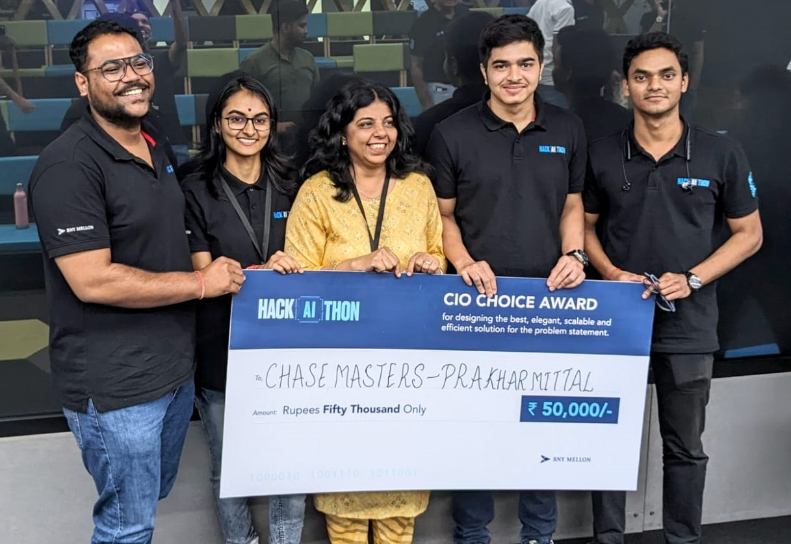

2023 —
Back to
BNY, now as a full time employee after completing my graduation.
As a core member of the team, I developed, enhanced and maintained projects and features that are closely integrated with the collateral business of BNY. I completely assumed the role of a full stack developer, contributing to both backend and frontend of the projects.
I also developed several tools that automate various tedious and manual processes of developers, thereby increasing efficieny. The ideas for these tools were a direct result of frustratingly doing the same manual process over and over again, everyday - instead of just getting into the code!
I also won first place at an AI Hackathon at the company (named HackAIthon) along with my team! That hackathon was my introduction to understanding how to develop applications that integrate LLMs.

2023 - 2023 (6 months)
My third and final internship was at
BNY, which I secured through campus placements. Once again, I worked as a full-stack developer, using Java Spring Boot, Angular, and Oracle DB.
Over a span of six months, I was responsible for designing and implementing sophisticated dashboards that provided real-time monitoring of critical processes and segments within BNY's collateral business. These dynamic dashboards became an essential tool for leadership, offering valuable insights for deal oversight, while also assisting the development and QA teams in evaluating and testing new features for collateral-related projects.
This internship was a transformative experience where I honed my skills in WebSockets and multithreading, deepening my understanding of how to build scalable and efficient real-time systems.
2022 - 2022 (2 months)
This was my second internship, a summer opportunity at
Credit Suisse I secured during my third year through an on-campus offer. I worked as a full-stack developer, utilizing Java Spring Boot, Angular, and Oracle DB. Over the course of eight weeks, I developed and integrated an end-to-end feature for an audit trail into the existing system.
It was also my first experience working at a multinational corporation of this size, which was a significant contrast to the startup environment of my previous internship. :)
2021 - 2021 (6 months)
My first internship as a software engineer, where I focused on backend development. I secured this role during my second year of university, while attending remote classes due to the Covid pandemic.
During the internship, I worked on two projects: an ERP (Enterprise Resource Management) system and a skill assessment platform similar to HackerRank. This experience was pivotal in shaping my backend engineering skills, as I had the opportunity to work with technologies like Node.js, Express, Redis, and various databases.